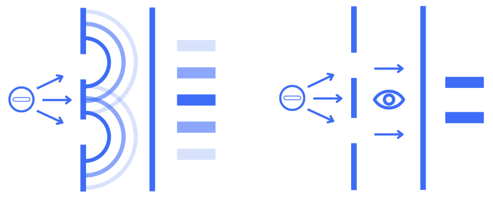

Wave-Particle Duality
How can this be possible? An electron has mass and a definite electric charge, and experiments can detect individual electrons hitting a screen at specific locations. That certainly sounds like the behaviour of a particle.
The core idea is to free ourselves from the shackles of our classical reality, and realize that electrons cannot be so easily described. It is a quantum object, and our familiar ideas of “particle” and “wave” only describe parts of its behaviour.
Many of the properties of an electron can be described mathematically using something called a wave function. This is a mathematical description of the electron's quantum state. Among other things, it allows us to calculate the probability of detecting the electron at different locations.
We will now explain the electron’s strange behaviour through the famous double-slit experiment.
Imagine shooting paintballs through two slits in a wall. Each paintball travels through one slit or the other, so on the wall behind it, we would eventually get two bands of impacts.
Now imagine sending water waves toward the same two slits. Each wave can spread through both slits, and the two waves will overlap. In some places, their peaks reinforce one another, in other places, a peak and trough cancel out. This produces a series of bright and dark bands called an interference pattern.
Now imagine shooting electrons towards the slits, after many electrons have been detected, an interference pattern like the water waves will gradually appear. Even if we send electrons one at a time!
This means that the interference cannot simply be caused by electrons physically crashing into one another. Instead, the quantum state of each electron has wave-like properties that allow the possible paths through the two slits to interfere with one another.
However, if we place a detector at the slits that can determine which slit the electron passed through, the interference pattern disappears! Instead, we get a result resembling the two bands we would expect from particles.
This is a little creepy, and it can seem as though the electron “knows” that we are watching it. But nothing conscious or magical is happening. To determine which path the electron takes, the electron must interact with something in the measuring apparatus. That interaction changes the quantum state and destroys the interference between the possible paths.
Remember that measurement does not turn a wave into a particle. The electron was never literally switching between two different forms. Rather, its quantum behaviour produces wave-like interference when the paths remain indistinguishable, while measurements produce definite, localized detection outcomes.
An electron is a quantum object. It can produce individual, localized detection events like a particle, while its quantum state evolves and interferes in a way that resembles a wave. The terms “wave” and “particle” are useful descriptions of different aspects of quantum behaviour, but neither one completely describes what an electron actually is.
